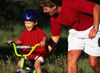

Bike Safety Basics
In This Article: Ride the Route Bike Safety Starts in Clothes Closet
Summer bicycling can be different from the demands of the school schedule. Those long leisurely periods of extended summer daylight will give way to more times when children are riding bikes closer to dusk and dawn. There will also be more vehicles (school buses, vans and car pools) rolling through neighborhoods in the mornings and afternoons, some of them driven by new drivers unfamiliar with the local area. It's a good time to review bike safety with every member of your family.
Ride the Route
Take time on the weekend, get outdoors and ride with your child to school. Model for your child how you always wear a helmet and other protective gear. Show them how you can easily check for bike tire pressure. The traffic pattern on a summer weekend will be different than on a normal busy school day, but at least you can take the time to look for potential unsafe riding sections and create alternatives.
On the practice ride, teach your child to always ride on the right side of the road, with traffic and not against it. Stay as far to the right as possible. Have them ride ahead of you and demonstrate for you consistently the use of appropriate hand signals. Observe how they approach all traffic signs and signals, especially where road signs might be partially obscured or where other vehicles aren't always following the posted signs.
Teach your child that it's okay to just stop the bike, dismount and walk the bike through an area that looks like it could be tricky, say because of excess water or other road debris. If that area has not improved by the next day, your child should let you know so that you can help to find an alternative route.
It's also perfectly acceptable to leave a bike locked at school if your child believes it is in any way unsafe to ride the bike home from school. Provide an alternative way for them to get home, and you can always make arrangements to drive to school later on and pick up the bike.
Bike Safety Starts in Clothes Closet
Don't let the latest fashions interfere with bike performance. Keep an eye out in the morning for loose pant legs and other materials that could become entangled in your child's bicycle gears.
Not every shoe worn at school is bike-pedal-friendly. Sandals and spiky heels can potentially cause trouble, and inhibit control of pedaling, braking and stepping off a bike quickly in an emergency. Look for untied shoelaces and other loose shoe accessories that might be grabbed by the gears.
If your child is riding to or from school at dawn or dusk, make sure the bike has proper reflectors and that your child is wearing clothes featuring reflective materials to improve visibility to motorists.
Now is the time to provide as much instruction and bicycling guidance as possible, before the school year begins, along with all the other activities like sports and clubs. Actively supervise your child on their bike until you're very comfortable that they are responsible and aware enough to ride on their own. One of the best signs they are ready is when they notice something about biking to school that you may not have noticed, and you have the chance to discuss it and jointly develop a plan to adapt to it.
Related Articles
Related Categories